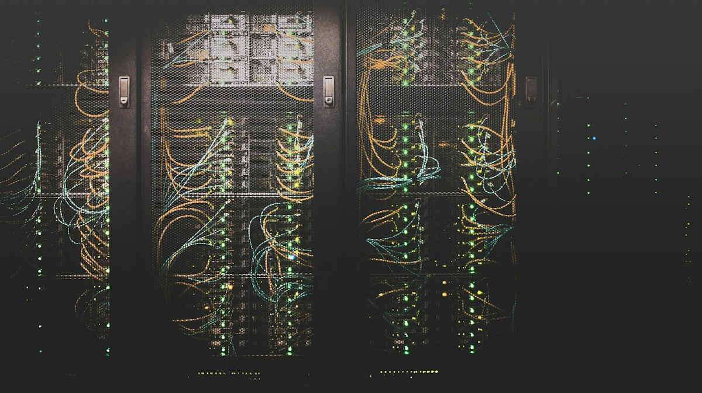

01 · Cloud gestionada
Infraestructura en la nube que simplemente funciona
Diseñamos, desplegamos y operamos sus servidores en la nube. Nosotros nos encargamos del monitoreo, los parches, los respaldos y el escalamiento. Usted solo ve los resultados.
- Migración planificada a AWS, Microsoft Azure o Google Cloud
- Administración de servidores, almacenamiento y redes
- Respaldos, recuperación ante desastres y continuidad
- Disponibilidad garantizada del 99.9% por contrato